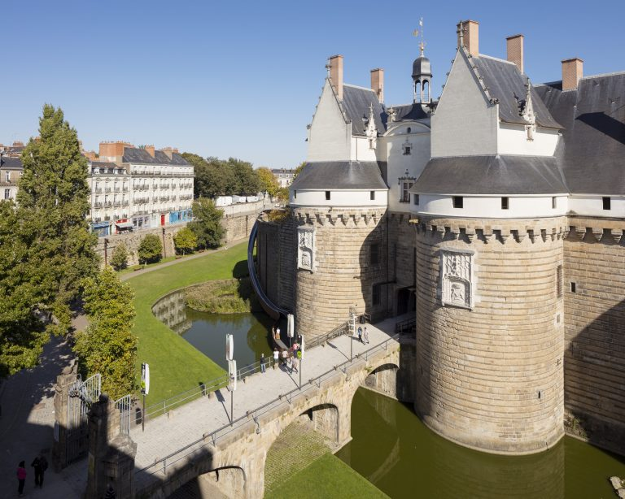
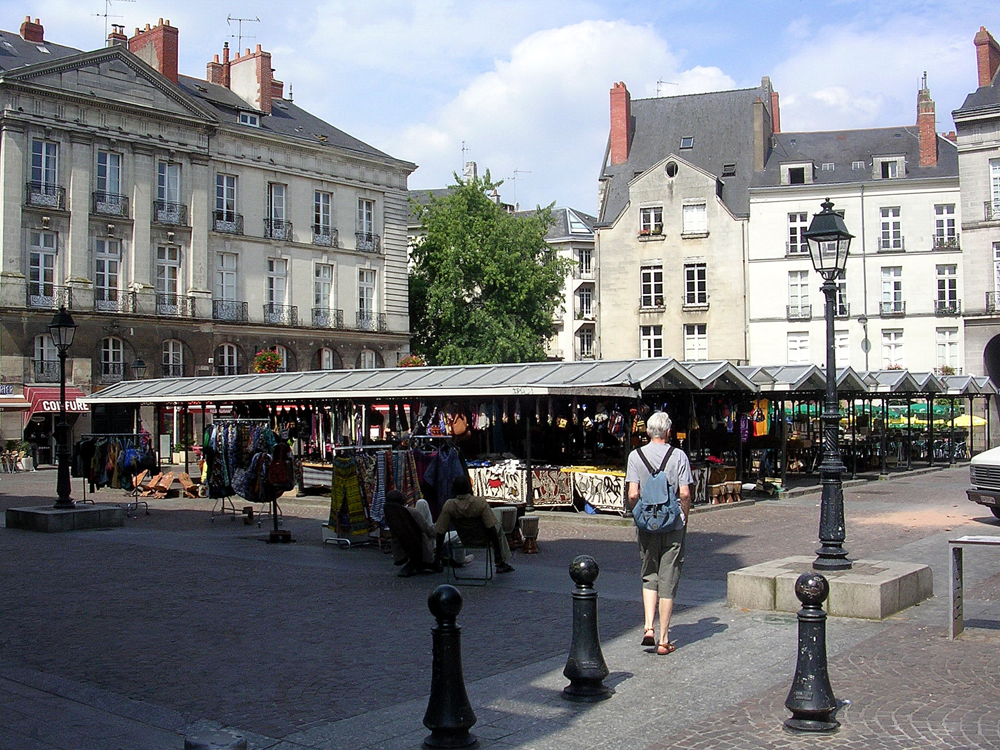
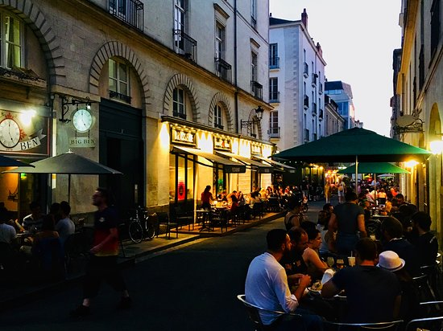

-
Le château des Ducs de Bretagne
Le château des Ducs de Bretagne est le monument phare à faire à Nantes. Implanté dans le cœur historique de la ville, cette forteresse est dotée d’un rempart du XVème siècle et de plusieurs bâtiments construits du XIV au XVIII ème siècle.
Toutes les informations sur le site officiel du château des Ducs de Bretagne.
 -
La tour Lu
Juste en face du château des Ducs de Bretagne se trouve la tour Lu, autre incontournable à visiter à Nantes. Comme son nom l’indique, elle faisait partie de l’ancienne usine de fabrication des célèbres petits gâteaux nantais.
A l’intérieur, au rez-de-chaussée, vous trouverez une petite salle retraçant l’histoire de l’usine Lu mais la visite vaut surtout le coup si vous montez tout en haut de la tour pour admirer la vue sur toute la ville de Nantes grâce au Gyrorama, une étrange machine digne d’une invention de Jules Verne. A voir absolument lors de votre séjour à Nantes.
Le tout baptisé Lieu Unique (LU pour ceux qui n’aurait pas fait le rapprochement).

-
La cathédrale Saint-Pierre et Saint-Paul de Nantes
Autre monument historique de Nantes: la cathédrale Saint-Pierre et Saint-Paul.
La construction de la cathédrale s’est étalée sur 500 ans. De taille à peu près équivalente à celle de Notre-Dame-de-Paris, sa façade en pierres blanches est entourée par 2 tours massives, au sommet desquelles se trouvent des terrasses dominant la ville.
A voir à l’intérieur :
Le tombeau de François II, dernier duc de Bretagne
Les cryptes : une crypte romane abritant les trésors de la cathédrale et l’autre une exposition retraçant son histoire
Le grand orgue.

-
Le quartier Bouffay
En parlant de bonne bouffe, c’est dans le quartier Bouffay, que vous trouverez une multitude de bars et de restaurants de tous les styles. Ce quartier très animé est un lieu prisé pour les sorties et le shopping.
Ancien cœur historique de la ville, il est toujours considéré comme l’âme de Nantes. Principalement piétonnier, c’est d’ailleurs dans le quartier Bouffay que vous pourrez voir des maisons à colombages et des vestiges d’édifices du XVème et XVIème siècle.
Le quartier Bouffay est l’un des meilleurs endroits où sortir le soir à Nantes!
 -
La rue Kervegan
C’est également lors de votre visite de Nantes que vous pourrez voir l’un des plus beaux ensembles européens d’architecture du XVIIIème siècle.
La rue Kervegan est considérée comme l’une des rues les plus caractéristiques de la ville avec ses immeubles classés au titre de monuments historiques.
Avec le quartier du Bouffay, elle fait partie du centre gastronomique de Nantes et vous y trouverez donc tout pour vous restaurer.
